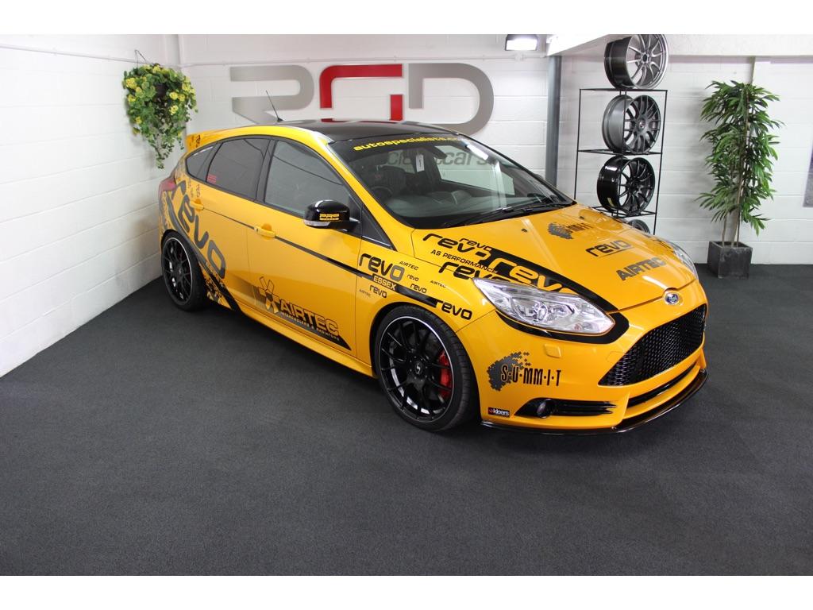

Today's Deal: Nissan Gt-R 3.8 V6 Black Edition 2dr
Price: £40,000
Nissan GT-R 3.8 Black Edition, , 2010. Stage 4.25 650 BHP, High Spec, 28K miles. FSH, , 3.8 V6 twin turbo black edition (Top model) semi auto with paddle shift. Finished in DMG, , Meticulously maintained regardless of cost. Full service history, Nissan followed my JM imports, GTR specialist, building some of the UK’s top spec GTR’s. All service paperwork and upgrade documents are present. Car always garaged and kept on Ctec trickle charger.
Click To Contact Dealer
Porsche 997 GT3 RS 4 Litre Clubsport
Price: £299,995
Features a rear roll cage, bucket seats and Red harnesses. In addition the car also benefits from the Sports Chromo Package, Porsche Carbon Ceramic brakes, Black instruments, 90 Litre fuel tank, Front Axle Lift, Xenons, and cup holders. The car has covered a total of 3,500 kms from new and the car has been fanatically maintained from new by its one and only owner.
Click To Contact Dealer
Ford Focus 2.0T ST3 5dr Revo Stage 4, 370bhp
Price: £18,999

Massive Modified Spec To Include Revo Stage 4 Development Software The Only Focus ST3 In The UK Running This Software, GT28 Turbo, Forged PEC Internals, Airtec Stage 3 Intercooler With WRC Scoop, Turbo Cooler, KW Variant 3 Coilovers, Summit 6 Pot Brakes, Smit Alloys, Triple R Front Splitter, Whole Underneath Summit Braces, Top Front And Rear Summit Strut Brace, Mongoose Exhaust With Lambo Style Exit, Plus More And More, This Car Is Pushing Circa 370bhp.
Click To Contact Dealer